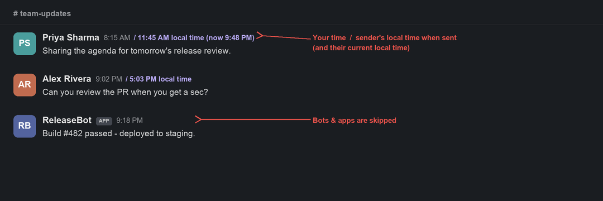
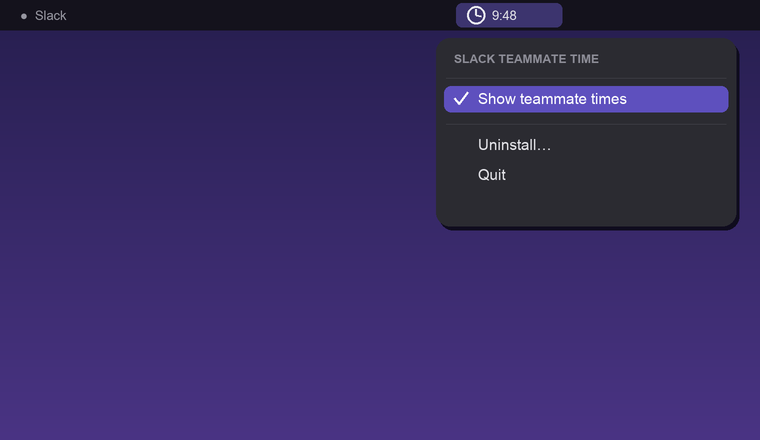

Each person's local time appears next to their name — so you instantly know whether it's a good time to ping them. No login, no admin, no Marketplace app. Slack itself is never touched.

Illustrative mockup with fictional names — not a real conversation.
Install once. After that it just shows the times, quietly, and stays out of your way.
On first launch it attaches to the Slack desktop app already on your Mac — locally, over a localhost-only debug port. No password, no OAuth, no workspace admin.
Using the token already in the page, it asks Slack's own API for each teammate's timezone and caches it. Nothing leaves your Mac.
Each sender's local time appears next to their name and refreshes every minute. A menu-bar toggle turns it on/off instantly — no reload.
Toggle it on or off in one click. Bots and apps are skipped automatically.

Each teammate's current local time, refreshed every minute — no profile hover required.
Older messages also show the sender's local time when they sent it, so timestamps make sense across zones.
A menu-bar clock toggles the times instantly — no reload, no restart.
Automated senders never get a label, so the message list stays tidy.
It reuses the Slack session already on your Mac. Works on personal and company workspaces alike.
The helper idles at ~15 MB RAM and is event-light. The menu-bar app is a tiny native binary.
Starts at login, runs continuously, restarts itself if needed. No daily relaunch, no Mac restart.
One app for Apple Silicon and Intel. Menu-bar only — and Slack's look and feel is untouched.
Download a .dmg, double-click the app, done. No Terminal, no Node.js to install — it's bundled.
Reviewed automatically with no critical, high, or medium findings — plus defensive hardening.
The injected script only talks to Slack's own same-origin API — the same thing the official client does. No analytics, no telemetry, no third-party servers.
It's read from the page and only sent to same-origin users.info — never logged, never written to disk, never sent anywhere else.
The debug port binds to 127.0.0.1 with a single allowed origin (not *). All injected text uses textContent, never innerHTML.
Everything runs as your user — no sudo, no setuid. Slack itself is never modified, and the deployed runtime is locked to your account.
See at a glance whether it's 9 AM or 9 PM for someone before you message — fewer 2 AM buzzes.
No profile hovering, no mental math. The time is just there, every message.
It's local to your Mac. No app to roll out, no admin to convince, no one else affected.
The label blends into the existing UI. No theme changes, no clutter, no broken aesthetic.
| macOS | 11.0 Big Sur or later |
| Chip | Apple Silicon or Intel (universal binary) |
| Slack | Native desktop app, signed in |
| Download | One .dmg · no prerequisites (Node bundled) |
| Price | Free & open source (MIT) |
| Mobile? | Slack already shows local time on a profile on mobile; this removes the extra tap on desktop. Why not mobile → |
Install once and the local times are just there, every message — quietly, on your own Mac.
WordPress product marketer · stubborn problem-solver · lifelong Harry Potter devotee
By day I'm the Product Marketing Specialist at WPBakery — the page builder that quietly powers a sizeable corner of the WordPress universe. Before that, I helped a single plugin cross 400,000+ active users. When the day-job owl flies home, I tinker on my own little workshop of spells — Slack Teammate Time is one of them.
Slack already knows everyone's local time — but it's hidden behind a hover, and it slips your mind exactly when you need it.
I kept doing the mental math wrong, or pinging a teammate right in the middle of their evening. I wanted that time right there in the conversation — but I didn't want to bother a workspace admin or push everyone onto a Marketplace app most of them would never need.
So I built a tiny thing for myself that just shows it — inline, quietly, without breaking Slack's look and feel. It runs entirely on your own Mac, needs no admin and no login, and it's free. It's especially handy for remote teams across timezones. If you've ever felt the same, it's yours too.
Free and open source. A GitHub star helps others find it; a small donation keeps the workshop lit.